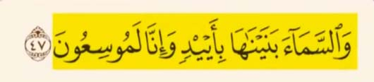
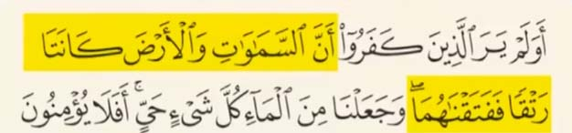
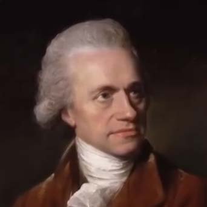
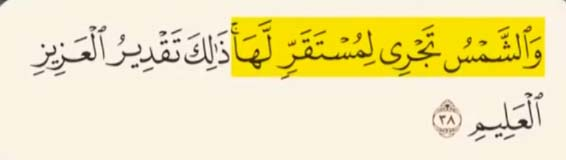
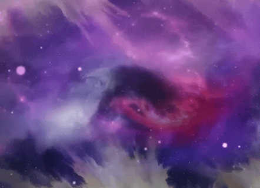
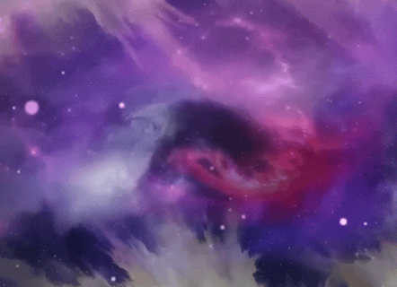
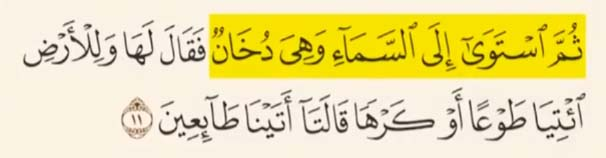

جواب
این شعر یک متن ساده و کودکانه است که هدفش فقط سرگرمیه وقتی بخواهیم هر جمله از این شعر رو به مفاهیم علمی پیچیده مثل زمین کیهان یا خدا نسبت بدیم در واقع داریم دانش و فرضیات قبلی مون رو به زور به متن تحمیل می کنیم مثل اینکه بگیم چون یک کودک عدد 4 = 2 + 2 رو بلده پس اون دانشمند بزرگی مثل انیشتینه
اما بیاییم مقایسه بکنیم آیات قرآن درمورد کیهان شناسی رو
در سال 1929 اخترشناس معروف آمریکایی ادوین هابل
کشف میکنه که کهکشان ها دارن از هم فاصله میگیرن یعنی جهان در حال گسترشه و این ایده اساس نظریه بیگ بنگ شد و امروزه اصل پذیرفته شده کیهان شناسی مدرنه
اما خداوند 1400 سال قبل در آیه 47 سوره ذاریات میگه :
ما آسمان را با قدرت بنا کردیم و همواره آن را گسترش می دهیم
در سال 2013 دانشمندان آژانس هوایی اروپا با کمک ماهواره پلانک کشف می کنند که
جهان در حدود 13/8 میلیارد سال پیش به هم پیوسته بود و با انفجار بزرگ از هم جدا شدند و آسمانها و زمین شکل گرفتند
اما خداوند چهارده قرن قبل در آیه 30 سوره انبیاء میگه
آیا کافران ندیدند که آسمان ها و زمین به هم پیوسته بودند و ما آنها را از هم جدا کردیم ؟
ویلیام هرشل ستاره شناس نامدار بریتانیایی
در سال 1875 میلادی با استفاده از تلسکوپ ها و طیف سنجی ها کشف میکنه که خورشید با سرعت تقریبی 828 هزار کیلومتر در ساعت درحال حرکت به سمت مشخصی که دانشمندان اون رو سولاری پکز نامیده اند است
solar apex

اما خداوند 1400 سال قبل در آیه 38 سوره یاسین میگه :
خورشید به سوی قرارگاه ویژه خود در حال حرکت است
پروفسور ادوارد ال رایت اخترفیزیکدان معروف آمریکایی
در سخنرانی خودش در تاریخ 23 مارس 2009 در دانشگاه کالیفرنیا میگه :
در کیهان شناسی مدرن در جهان اولیه پس از بیگ بنگ به صورت یک پلاسما یا همون گاز یونیزه شده داغ توصیف میشه
این وضعیت باعث می شود که جهان به شکلی کِدِر و غیر شفاف باشه مثل دود یا مه غلیظ که جلوی عبور نور را میگیره
 

و همچنین وبسایت رصدخانه فضایی هرشل که مربوط به آژانس فضایی اروپاست میگه :
چیزی که ما آن را غبار کیهانی جهان اولیه می نامیم نام صحیح تر آن دود است
اما خداوند 1400 سال قبل در آیه یازده سوره فصلت میگه :
سپس به آسمان ها پرداخت که به صورت دود بود
این ها نمونه های علمی و مستندی هستند که قرآن را از یک متن صرفا ادبی یا تخیلی متمایز میکنه و نشون میده که چنین آیات دقیق نمیتونه بر پایه حدس و گمان شکل گرفته باشه
نکات تکمیلی
- جمعبندی: قرآن، بیش از 1400 سال پیش، حقایق کیهانشناسی را به دقت بیان کرده است؛ از گسترش جهان تا حرکت خورشید و وضعیت پلاسما در جهان اولیه، که بعدها توسط اخترشناسان مدرن کشف شد.
- نکته علمی: کشف حرکت خورشید به سوی solar apex و سرعت دقیق آن توسط ویلیام هرشل و تایید بعدی اخترفیزیکدانان، نشان میدهد که قرآن به حرکت منظومهها و ستارگان قبل از ابزار علمی پیشرفته اشاره کرده است.
- نکته کیهانی: وضعیت پلاسما و دود کیهانی در جهان اولیه که پروفسور ادوارد ال رایت و رصدخانه هرشل توصیف کردهاند، دقیقاً با آیات قرآن در سوره فصلت هماهنگی دارد. این نشان میدهد که قرآن به پدیدههایی اشاره میکند که هیچ انسانی در زمان نزول نمیتوانست آنها را بداند.
- نکته فلسفی: تلاش برای تفسیر شعرهای کودکانه یا متون ادبی به مفاهیم علمی، همانند زور کردن دانش و فرضیات خود بر متن است. قرآن اما به دلیل پیشگویی و دقت علمی، از جنس متون ادبی معمولی نیست و نشانهای از منبع الهی آن ارائه میدهد.
- یادآوری: قرآن کتابی است که نه صرفاً ادبی و نه تخیلی است. آیات آن با یافتههای علمی مدرن تطابق دارد و نشان میدهد که منبعی فراتر از دانش زمان خود دارد، که نمیتوان آن را با حدس و گمان انسانی توضیح داد.